Đang cập nhật
Nội dung trang này chưa được cập nhật cho Godot
4.7
và có thể đã lỗi thời. Nếu bạn biết cách cải thiện trang này hoặc xác nhận
được rằng nó vẫn đúng, hãy gửi một pull request (bản tiếng Anh).
Hoạt ảnh cắt ghép (cutout)
Đó là gì?
Theo truyền thống, hoạt ảnh cắt ghép là một dạng hoạt hình stop motion, trong đó các mảnh giấy (hoặc vật liệu mỏng khác) được cắt thành những hình dạng đặc biệt và sắp xếp thành hình biểu diễn hai chiều của nhân vật và đồ vật. Cơ thể nhân vật thường được ghép từ nhiều mảnh. Các mảnh được sắp xếp và chụp lại một lần cho mỗi khung hình của phim. Người làm hoạt hình di chuyển và xoay các bộ phận từng chút một giữa mỗi lần chụp để tạo ảo giác chuyển động khi các hình ảnh được phát nhanh liên tiếp.
Ngày nay, hoạt ảnh cắt ghép có thể được mô phỏng bằng phần mềm, như trong South Park và Jake and the Never Land Pirates.
Trong trò chơi điện tử, kỹ thuật này cũng đã trở nên phổ biến. Ví dụ như Paper Mario hoặc Rayman Origins .
Hoạt ảnh cắt ghép trong Godot
Godot cung cấp các công cụ để làm việc với rig cắt ghép và rất phù hợp cho quy trình này:
Hệ thống hoạt ảnh được tích hợp hoàn toàn với engine: Điều này có nghĩa là hoạt ảnh có thể điều khiển nhiều thứ hơn hẳn chuyển động của đối tượng. Texture, kích thước sprite, pivot, độ mờ đục, điều biến màu và nhiều thứ khác đều có thể tạo hoạt ảnh và pha trộn.
Kết hợp các phong cách hoạt ảnh: AnimatedSprite2D cho phép dùng hoạt ảnh cel truyền thống cùng với hoạt ảnh cắt ghép. Trong hoạt ảnh cel, các khung hình khác nhau dùng những bản vẽ hoàn toàn khác nhau thay vì cùng các mảnh được đặt ở vị trí khác. Trong một hoạt ảnh chủ yếu dựa trên cắt ghép, hoạt ảnh cel có thể được dùng chọn lọc cho các bộ phận phức tạp như bàn tay, bàn chân, biểu cảm khuôn mặt thay đổi, v.v.
Phần tử có hình dạng tùy chỉnh: Có thể tạo hình dạng tùy chỉnh bằng Polygon2D, cho phép tạo hoạt ảnh UV, biến dạng, v.v.
Hệ thống hạt (particle): Rig hoạt ảnh cắt ghép có thể kết hợp với hệ thống hạt. Điều này hữu ích cho hiệu ứng phép thuật, ba lô phản lực, v.v.
Collider tùy chỉnh: Đặt collider và vùng ảnh hưởng ở các phần khác nhau của bộ xương, rất phù hợp cho trùm (boss) và game đối kháng.
Animation Tree: Cho phép kết hợp và pha trộn phức tạp giữa nhiều hoạt ảnh, giống như cách hoạt động trong 3D.
Và còn nhiều hơn nữa!
Làm GBot
Trong bài hướng dẫn này, chúng ta sẽ dùng các mảnh của nhân vật GBot do Andreas Esau tạo ra làm nội dung minh họa.
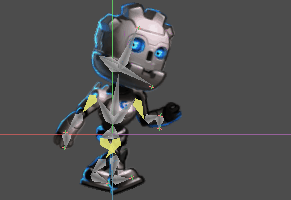
Tải asset tại đây: cutout_animation_assets.zip.
Thiết lập rig
Tạo một Node2D trống làm gốc của scene, chúng ta sẽ làm việc bên dưới nó:
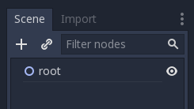
Node đầu tiên của mô hình là hông. Nhìn chung, cả trong 2D lẫn 3D, hông là gốc của bộ xương. Điều này giúp việc tạo hoạt ảnh dễ dàng hơn:
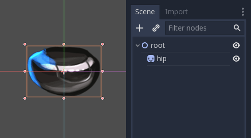
Tiếp theo là thân. Thân cần là con của hông, vì vậy hãy tạo một sprite con và tải texture thân, sau đó căn chỉnh cho phù hợp:
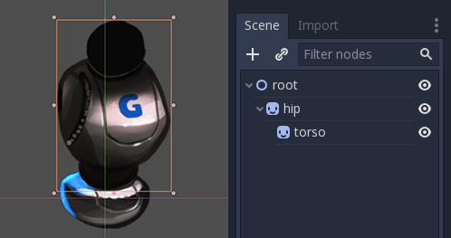
Trông khá ổn. Hãy kiểm tra xem hệ phân cấp của chúng ta có hoạt động như một bộ xương không bằng cách xoay phần thân. Bạn có thể nhấn E để vào chế độ xoay và kéo bằng chuột trái. Để thoát chế độ xoay, nhấn ESC.
Pivot xoay đang sai và cần được điều chỉnh.
Dấu chữ thập nhỏ ở giữa Sprite2D chính là pivot xoay:
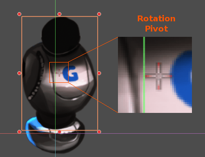
Điều chỉnh pivot
Có thể điều chỉnh pivot bằng cách thay đổi thuộc tính offset của Sprite2D:
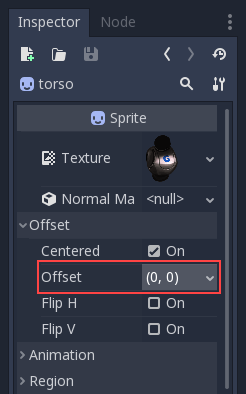
Pivot cũng có thể được điều chỉnh trực quan. Khi đang di chuột qua điểm pivot mong muốn, nhấn V để di chuyển pivot đến đó cho Sprite2D đang chọn. Trên thanh công cụ cũng có một công cụ với chức năng tương tự.
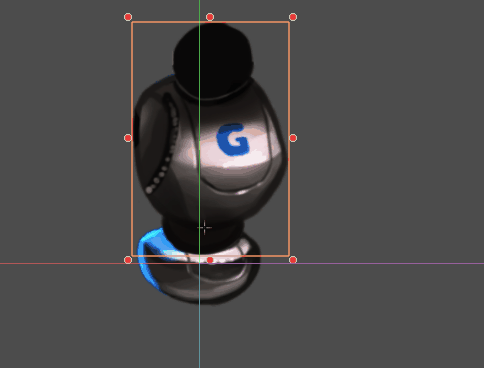
Tiếp tục thêm các bộ phận cơ thể, bắt đầu với cánh tay phải. Hãy đảm bảo đặt mỗi sprite vào đúng vị trí trong hệ phân cấp, để phép xoay và tịnh tiến của nó tương đối so với node cha:
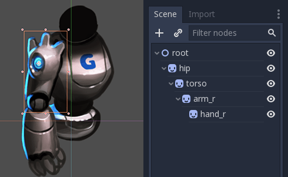
Với cánh tay trái thì có vấn đề. Trong 2D, node con hiển thị phía trước node cha:
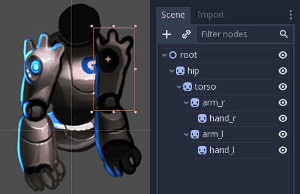
Chúng ta muốn cánh tay trái hiển thị phía sau hông và thân. Có thể di chuyển các node cánh tay trái ra sau hông (lên trên node hông trong hệ phân cấp scene), nhưng khi đó cánh tay trái sẽ không còn ở đúng vị trí trong hệ phân cấp. Điều này có nghĩa là nó sẽ không bị ảnh hưởng bởi chuyển động của thân. Chúng ta sẽ khắc phục vấn đề này bằng các node RemoteTransform2D.
Ghi chú
Bạn cũng có thể khắc phục vấn đề thứ tự chiều sâu bằng cách điều chỉnh thuộc tính Z của bất kỳ node nào kế thừa từ Node2D.
Node RemoteTransform2D
Node RemoteTransform2D biến đổi các node ở nơi khác trong hệ phân cấp. Node này áp dụng transform của chính nó (bao gồm mọi phép biến đổi kế thừa từ các node cha) lên node từ xa mà nó nhắm tới.
Điều này cho phép chúng ta sửa thứ tự hiển thị của các phần tử, độc lập với vị trí của các bộ phận đó trong hệ phân cấp cắt ghép.
Tạo một node RemoteTransform2D làm con của thân. Đặt tên là remote_arm_l. Tạo thêm một node RemoteTransform2D bên trong node đầu tiên và đặt tên là remote_hand_l. Dùng thuộc tính Remote Path của hai node mới để lần lượt nhắm tới các sprite arm_l và hand_l:
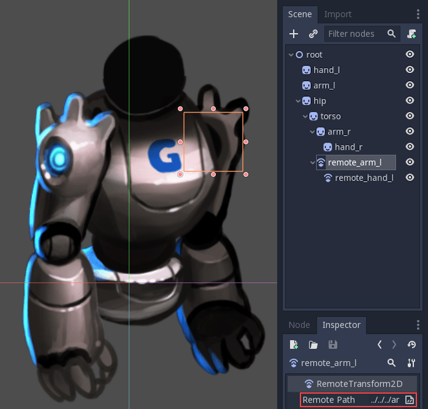
Giờ đây di chuyển các node RemoteTransform2D sẽ di chuyển các sprite. Vì vậy chúng ta có thể tạo hoạt ảnh bằng cách điều chỉnh transform của RemoteTransform2D:
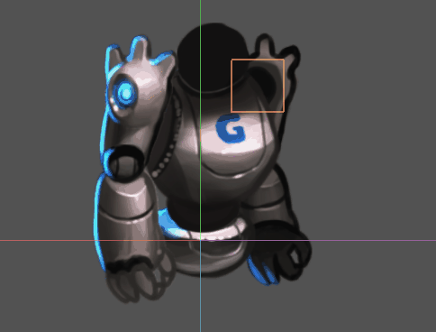
Hoàn thiện bộ xương
Hoàn thiện bộ xương bằng cách làm theo các bước tương tự cho những bộ phận còn lại. Scene kết quả sẽ trông giống như sau:
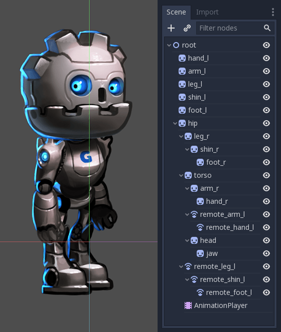
Rig kết quả sẽ dễ tạo hoạt ảnh. Bằng cách chọn các node và xoay chúng, bạn có thể tạo hoạt ảnh động học thuận (FK) một cách hiệu quả.
Với các đối tượng và rig đơn giản thì như vậy là ổn, nhưng có một số hạn chế:
Việc chọn sprite trong viewport chính có thể trở nên khó khăn với các rig phức tạp. Cuối cùng bạn sẽ phải dùng cây scene để chọn các bộ phận, điều này có thể chậm hơn.
Động học nghịch (IK) hữu ích để tạo hoạt ảnh cho các chi như bàn tay và bàn chân, nhưng không thể dùng với rig của chúng ta ở trạng thái hiện tại.
Để giải quyết những vấn đề này, chúng ta sẽ dùng bộ xương (skeleton) của Godot.
Bộ xương
Trong Godot có một công cụ hỗ trợ tạo "xương" giữa các node. Các node được liên kết bằng xương được gọi là bộ xương (skeleton).
Ví dụ, hãy biến cánh tay phải thành một bộ xương. Để tạo bộ xương, cần chọn một chuỗi node từ trên xuống dưới:
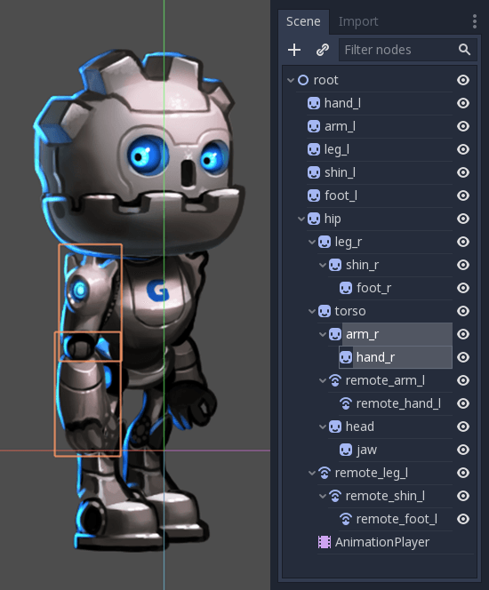
Sau đó, nhấp vào menu Skeleton và chọn Make Bones.
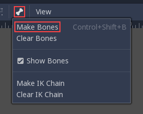
Thao tác này sẽ thêm xương bao phủ cánh tay, nhưng kết quả có thể khiến bạn bất ngờ.
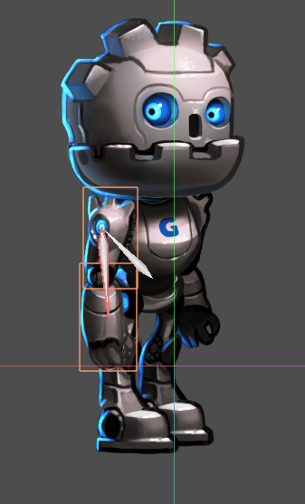
Tại sao bàn tay không có xương? Trong Godot, một xương nối một node với node cha của nó. Và hiện tại node bàn tay không có node con nào. Với hiểu biết này, hãy thử lại.
Bước đầu tiên là tạo một node điểm cuối. Loại node nào cũng được, nhưng nên dùng Marker2D vì nó hiển thị trong trình chỉnh sửa. Node điểm cuối sẽ đảm bảo xương cuối cùng có hướng.
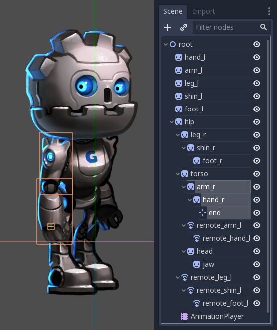
Bây giờ hãy chọn toàn bộ chuỗi, từ điểm cuối đến cánh tay, và tạo xương:
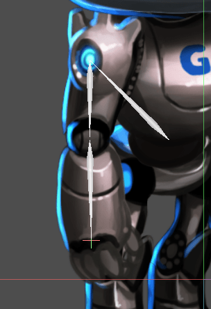
Kết quả trông giống bộ xương hơn nhiều, và giờ cánh tay trên cùng cẳng tay có thể được chọn và tạo hoạt ảnh.
Tạo điểm cuối cho tất cả các chi quan trọng. Tạo xương cho tất cả các bộ phận có khớp của hình cắt ghép, với hông là điểm kết nối cuối cùng giữa tất cả các bộ phận.
Bạn có thể nhận thấy một xương thừa được tạo ra khi nối hông và thân. Godot đã nối node hông với gốc scene bằng một xương, và chúng ta không muốn điều đó. Để khắc phục, hãy chọn node gốc và node hông, mở menu Skeleton, nhấp clear bones.
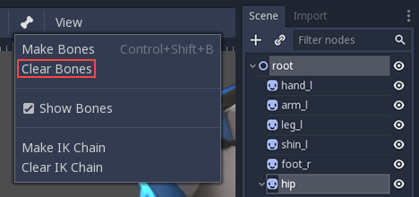
Bộ xương cuối cùng của bạn sẽ trông tương tự như sau:
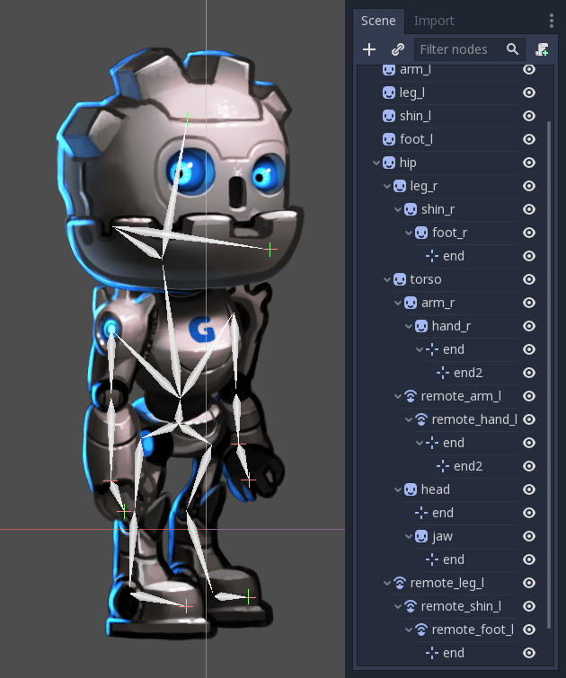
Có thể bạn đã để ý thấy một bộ điểm cuối thứ hai ở bàn tay. Lý do sẽ sớm được giải thích.
Giờ toàn bộ hình đã được rig, bước tiếp theo là thiết lập các chuỗi IK. Chuỗi IK cho phép điều khiển các chi tự nhiên hơn.
Chuỗi IK
IK là viết tắt của inverse kinematics (động học nghịch). Đây là một kỹ thuật tiện lợi để tạo hoạt ảnh cho vị trí của bàn tay, bàn chân và các chi khác của rig như rig chúng ta vừa làm. Hãy tưởng tượng bạn muốn đặt bàn chân của nhân vật ở một vị trí cụ thể trên mặt đất. Không có chuỗi IK, mỗi chuyển động của bàn chân sẽ đòi hỏi xoay và định vị nhiều xương khác (ít nhất là cẳng chân và đùi). Việc này khá phức tạp và dẫn đến kết quả thiếu chính xác. IK cho phép chúng ta di chuyển trực tiếp bàn chân trong khi cẳng chân và đùi tự điều chỉnh.
Ghi chú
Chuỗi IK trong Godot hiện chỉ hoạt động trong trình chỉnh sửa, không hoạt động khi chạy. Chúng nhằm giúp việc đặt keyframe dễ dàng hơn, và hiện chưa hữu ích cho các kỹ thuật như hoạt ảnh thủ tục (procedural animation).
Để tạo chuỗi IK, hãy chọn một chuỗi xương từ điểm cuối đến gốc của chuỗi. Ví dụ, để tạo chuỗi IK cho chân phải, hãy chọn như sau:
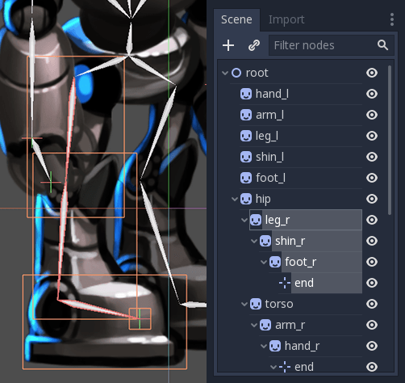
Sau đó bật IK cho chuỗi này. Vào Edit > Make IK Chain.
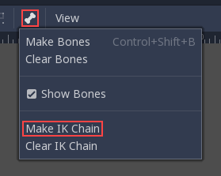
Kết quả là gốc của chuỗi sẽ chuyển sang màu vàng.
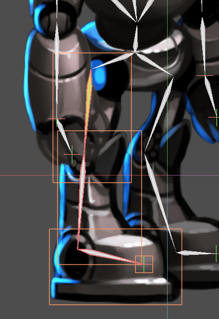
Khi chuỗi IK đã được thiết lập, hãy nắm lấy bất kỳ node con hoặc node cháu nào của gốc chuỗi (ví dụ một bàn chân) và di chuyển nó. Bạn sẽ thấy phần còn lại của chuỗi tự điều chỉnh khi bạn thay đổi vị trí của nó.
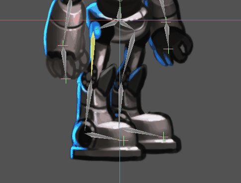
Mẹo hoạt ảnh
Phần sau đây là tập hợp các mẹo tạo hoạt ảnh cho rig cắt ghép của bạn. Để biết thêm về cách hệ thống hoạt ảnh trong Godot hoạt động, xem Giới thiệu về các tính năng hoạt ảnh.
Đặt keyframe và loại trừ thuộc tính
Các phần tử ngữ cảnh đặc biệt sẽ xuất hiện trên thanh công cụ phía trên khi cửa sổ trình chỉnh sửa hoạt ảnh đang mở:
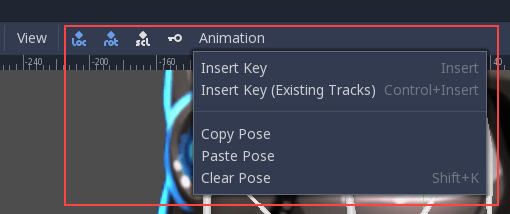
Nút chìa khóa (key) chèn keyframe vị trí, xoay và tỷ lệ cho các đối tượng hoặc xương đang chọn tại vị trí đầu phát hiện tại.
Các nút bật/tắt "loc", "rot" và "scl" bên trái nút key thay đổi chức năng của nó, cho phép bạn chỉ định keyframe sẽ được tạo cho thuộc tính nào trong ba thuộc tính.
Đây là minh họa cho thấy tính năng này hữu ích như thế nào: Giả sử bạn có một node đã có hai keyframe chỉ tạo hoạt ảnh cho tỷ lệ. Bạn muốn thêm một chuyển động xoay chồng lên cho cùng node đó. Chuyển động xoay cần bắt đầu và kết thúc ở thời điểm khác với thay đổi tỷ lệ đã được thiết lập. Bạn có thể dùng các nút bật/tắt để chỉ thêm thông tin xoay khi thêm keyframe mới. Bằng cách này, bạn tránh được việc thêm các keyframe tỷ lệ không mong muốn có thể làm hỏng hoạt ảnh tỷ lệ hiện có.
Tạo tư thế nghỉ (rest pose)
Hãy coi tư thế nghỉ (rest pose) là tư thế mặc định mà rig cắt ghép của bạn nên được đặt về khi không có tư thế nào khác đang hoạt động trong game. Tạo tư thế nghỉ như sau:
1. Đảm bảo các bộ phận của rig được đặt ở vị trí trông giống tư thế "nghỉ".
Tạo một hoạt ảnh mới, đổi tên thành "rest".
Chọn tất cả các node trong rig của bạn (chọn bằng khung kéo là được).
4. Đảm bảo các nút bật/tắt "loc", "rot" và "scl" đều đang bật trên thanh công cụ.
5. Nhấn nút key. Các key sẽ được chèn cho tất cả các bộ phận đang chọn, lưu lại sắp xếp hiện tại của chúng. Giờ bạn có thể gọi lại tư thế này khi cần trong game bằng cách phát hoạt ảnh "rest" vừa tạo.
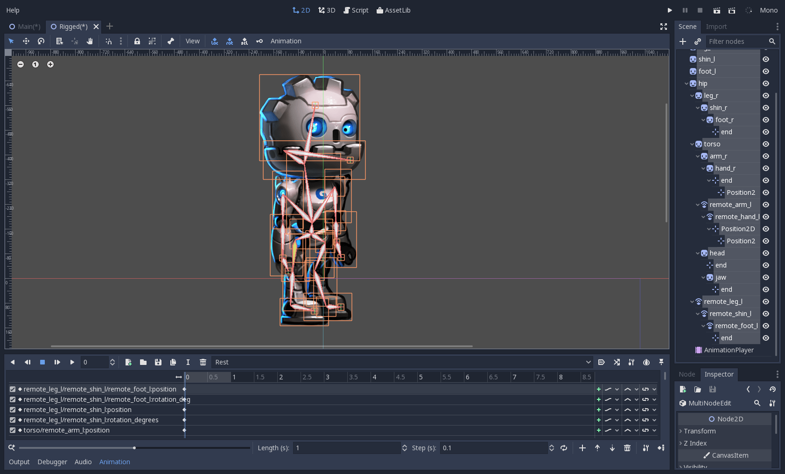
Chỉ thay đổi phép xoay
Khi tạo hoạt ảnh cho rig cắt ghép, thường chỉ có phép xoay của các node cần thay đổi. Vị trí và tỷ lệ hiếm khi được dùng.
Vì vậy khi chèn key, bạn có thể thấy tiện hơn nếu chỉ bật nút "rot" trong hầu hết thời gian:
Điều này giúp tránh tạo ra các track hoạt ảnh không mong muốn cho vị trí và tỷ lệ.
Đặt keyframe cho chuỗi IK
Khi chỉnh sửa chuỗi IK, không cần chọn toàn bộ chuỗi để thêm keyframe. Chọn điểm cuối của chuỗi và chèn keyframe sẽ tự động chèn keyframe cho tất cả các bộ phận khác của chuỗi.
Di chuyển sprite ra sau node cha về mặt hiển thị
Đôi khi cần một node thay đổi chiều sâu hiển thị so với node cha trong khi phát hoạt ảnh. Hãy nghĩ đến một nhân vật quay mặt về phía camera, rút một vật gì đó từ sau lưng ra và cầm nó ra phía trước. Trong hoạt ảnh này, toàn bộ cánh tay và vật trong tay cần thay đổi chiều sâu hiển thị so với cơ thể nhân vật.
Để hỗ trợ việc này, tất cả các node kế thừa từ Node2D đều có thuộc tính "Behind Parent" có thể đặt keyframe. Khi lên kế hoạch cho rig, hãy nghĩ về các chuyển động mà nó cần thực hiện và cân nhắc cách bạn sẽ dùng "Behind Parent" và/hoặc các node RemoteTransform2D. Chúng có chức năng chồng lấn nhau.
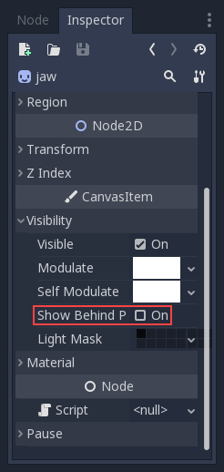
Đặt đường cong easing cho nhiều key
Để áp dụng cùng một đường cong easing cho nhiều keyframe cùng lúc:
Chọn các key liên quan.
Nhấp vào biểu tượng bút chì ở góc dưới bên phải của bảng hoạt ảnh. Thao tác này sẽ mở trình chỉnh sửa transition.
Trong trình chỉnh sửa transition, nhấp vào đường cong mong muốn để áp dụng.
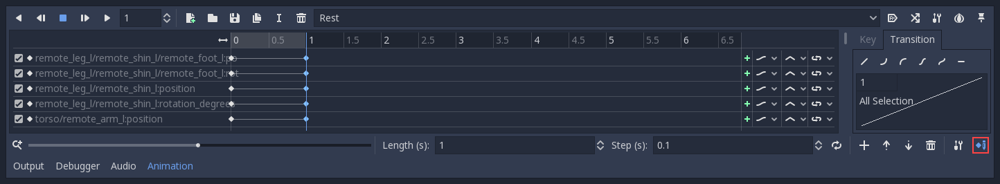
Biến dạng theo xương 2D
Biến dạng theo xương (skeletal deform) có thể dùng để bổ sung cho rig cắt ghép, cho phép từng mảnh biến dạng một cách tự nhiên (ví dụ: râu ăng-ten rung rinh khi một nhân vật côn trùng bước đi).
Quy trình này được mô tả trong một bài hướng dẫn riêng.